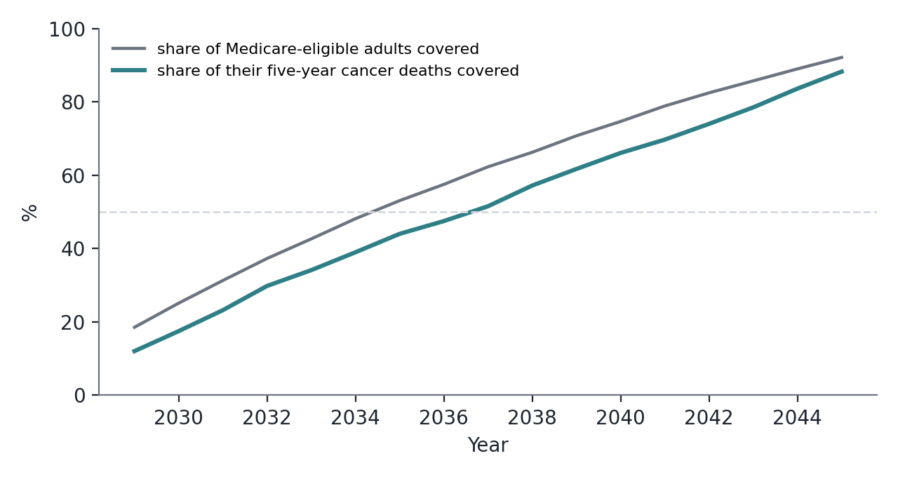
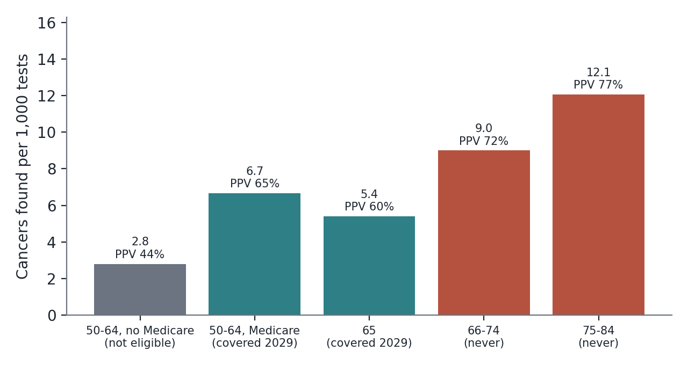
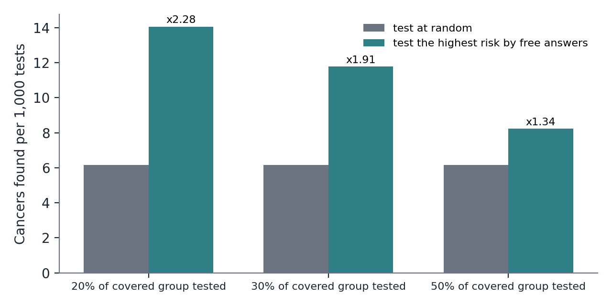
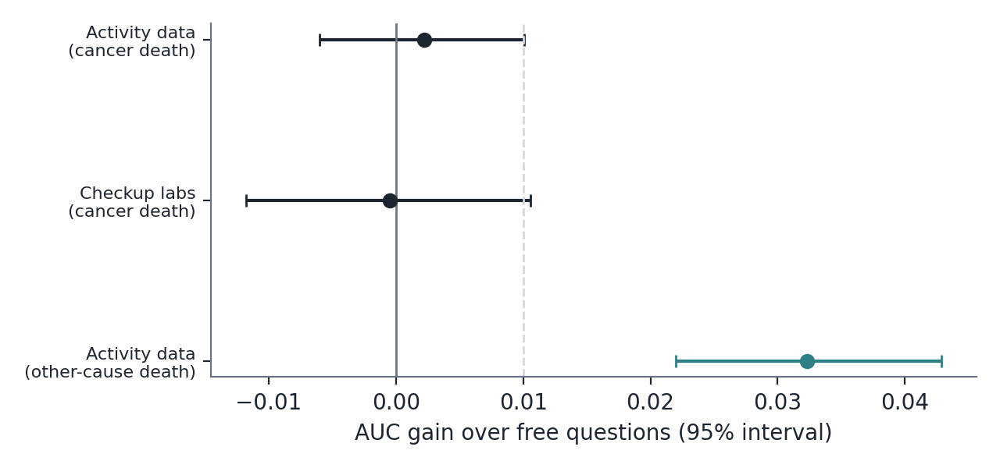

Background. In February 2026 the United States enacted Medicare coverage of multi-cancer early detection (MCED) blood tests from 2029 (Public Law 119-75). The law pays only for people aged 50 or older who are under an age limit of 65 in 2029 that rises by one year each year. Because the limit rises as fast as people age, it is in effect a birth-date cutoff. We asked whom the law reaches, what the test would find in them, and whether information people already have for free could direct the tests better.
Methods. Pre-registered analysis. NHIS 2005-2009 (73,303 adults, survey-weighted) linked to the National Death Index, five-year cancer death as the marker of lethal-cancer risk, and the published performance of one MCED test (PATHFINDER 2: detection 0.54% in adults 50 and older, specificity 99.64%). A model built on 1997-2002 using age, sex and smoking ranked people. A second pre-registered analysis in NHANES 2003-2006 (4,241 adults) asked whether routine checkup results or a week of accelerometer data, the kind of activity record phones and watches keep, add to free questions for cancer death.
Results. In 2029 the law covers 19% of Medicare-eligible adults and 12% of their five-year cancer deaths (95% CI 9.0% to 15.8%); coverage of cancer deaths does not pass half until about 2037. The people it never covers, everyone 66 and older in 2029, are those in whom a test would find the most cancers per test (9.0 to 12.1 per 1,000 against 5.4 to 6.7) at the lowest cost per cancer found. The first people covered are mostly Medicare beneficiaries aged 50 to 64, who carried 2.32 times the age-standardised five-year cancer-death rate of same-age adults without Medicare. Inside the covered group, testing the fifth at highest risk on free answers found 2.28 times as many cancers per test as testing at random (95% CI 1.53 to 3.04), cutting test cost per cancer found from $82,451 to $36,205; almost all of that came from smoking. Neither routine checkup results (-0.001 AUC) nor activity data (+0.002) added to free questions for cancer death, although activity data predicted other-cause death well (+0.032).
Conclusions. As written, Medicare's MCED law excludes the people in whom the test would work best and, for its first years, mainly reaches a disabled, high-risk group whose need is real but small in number. Within whatever group is covered, a few free questions could make each test go much further; wearable and checkup data do not add to that for cancer. No MCED test has shown a reduction in cancer deaths, so these are statements about who the law reaches and how to spend it, not about lives saved.
Blood tests that look for signals of many cancers at once are the most discussed new idea in cancer screening. They find cancers that have no screening test, but they miss most early cancers, cost close to $1,000, and have not yet been shown to reduce deaths: the NHS-Galleri trial, reported in 2026, did not reduce stage III and IV cancers overall, although stage IV diagnoses fell in later rounds.2 Even so, in February 2026 Congress enacted Medicare coverage of these tests from 2029, at the payment rate of the stool DNA test, subject to FDA approval and a national coverage determination.1
The law's eligibility rule has received little attention. Payment is barred for anyone who, on 1 January of the year of the test, has reached 65 in 2029, 66 in 2030, and so on. The limit rises exactly as fast as people age, so anyone already 65 on 1 January 2029 never becomes eligible, while everyone younger stays eligible for life. The law covers birth cohorts, not ages. Cancer risk rises steeply with age, so the rule excludes the people at highest risk. The one published estimate of what the law will cost Medicare described the age limit as one that rises each year but did not analyse who it excludes.3
Earlier work in this project showed that four free answers (age, sex, smoking, BMI) rank the risk of dying of cancer about as well as anything cheap, and that routine blood tests add almost nothing. Risk-stratified use of MCED tests has been proposed using polygenic scores and risk factors in UK Biobank,4 and modelled for risk-factor subgroups,5,6 but not against the eligibility rule that will actually govern US use. This paper asks four pre-registered questions: what share of cancer-death risk does the law reach; what would the test find in the people it covers and the people it does not; how much better would tests go if the covered group were triaged on free answers; and who are the first people covered. A second pre-registered analysis asks whether data people already have for free beyond questions, routine checkup results and the activity a phone or watch records, adds anything for cancer.
The questions, the mapping from risk to test results, and three bars were committed before the analysis (docs/MCED_LAW_PREREG.md). The first version quoted the bill as introduced (coverage from 2028, age limit 68). An independent re-analysis found that the enacted text differs, and we confirmed it in the enrolled bill: coverage from 1 January 2029, a floor of 50, and a limit of 65 in 2029.1 The correction is recorded in the pre-registration, the first run is kept in the repository, and every number here uses the enacted rule. With the introduced rule the 2028 group would have held 24% of cancer deaths; the enacted rule is stricter.
NHIS 1997-2009 public-use files linked to the National Death Index through 2019, with the NHIS Medicare-coverage recode added to the cohort built for the earlier study (the rebuilt file is identical on every earlier column). Adults 35-84 without a reported earlier cancer. Outcome: death from cancer within five years of interview. All descriptive results use interview years 2005-2009 with the sample-adult weight. The ranking model (age as a cubic spline, sex, smoking status, cigarettes a day, years since quitting) was fitted on 1997-2002.
Medicare-eligible adults are those aged 65-84 plus Medicare beneficiaries aged 50-64 (under 65, Medicare entitlement comes almost entirely from disability or end-stage kidney disease). Covered in 2029: beneficiaries aged 50-64, plus adults aged 65 at interview as a stand-in for those turning 65 during 2029. For later years the covered ages extend by one year per year (Figure 1), holding the 2005-2009 age and risk structure fixed; this projection is exploratory.
The chance that the test finds a cancer in a group was taken as proportional to the group's observed five-year cancer-death rate, scaled so that adults 50 and older reproduce PATHFINDER 2's detection rate of 0.54%.7 False alarms are (1 - 0.9964) times those without a detected cancer. This rests on a stated assumption, that MCED tests preferentially detect the cancers that kill, and it was varied (detection proportional to the square root of predicted risk). Because only observed death rates enter the main numbers, ranking people by the model and scoring them with the same model never happens; ratios between groups are ratios of observed death rates, and the anchor only sets the absolute scale. Costs are the test only, at $508.87, the Medicare rate for the stool DNA test (CPT 81528) on the 2026 Clinical Laboratory Fee Schedule, which the law uses until 2031.
Inside the 2029-covered group we compared testing the 20%, 30% or 50% at highest predicted risk with testing the same number at random, with bootstrap intervals. The free-data ladder (docs/FREE_DATA_LADDER_PREREG.md) used NHANES 2003-2006 adults 40-84 with at least four valid days of hip accelerometry, summarised (after the Troiano non-wear rule8) as total activity, minutes of moderate-to-vigorous activity, share of time sedentary and activity fragmentation. Questions (age, sex, smoking, BMI, self-reported weight change and unintentional weight loss), routine checkup results and activity were compared by out-of-fold AUC from 20 repeats of 5-fold cross-validation.
In 2029 the covered group is 18.6% of Medicare-eligible adults and holds 12.0% of their five-year cancer deaths (95% CI 9.0% to 15.8%); the pre-registered bar (an interval below 50%) was met. Coverage widens as younger cohorts age into Medicare, but in the stylised projection it passes half of cancer deaths only in about 2037 (Figure 1). Everyone born before 1964 is permanently outside the law.

Expected yield rises steeply with age (Figure 2, Table 1). Among adults 75-84, never covered, a test would find about 12.07 cancers per 1,000 tests, 77% of positives would be real, and the test cost per cancer found would be $42,177. Among adults turning 65, covered, the figures are 5.41, 60% and $94,080. That an older person benefits less from finding a cancer (shorter life expectancy, more competing illness, more overdiagnosis) is a real reason to limit testing by age, and this analysis does not weigh it; it shows only how much yield the rule gives up.

| Group | Adults | Five-year cancer deaths | Cancers found / 1,000 tests | False alarms / 1,000 | Positives that are real | Test cost per cancer found |
|---|---|---|---|---|---|---|
| 50-64 without Medicare (not eligible) | 23,399 | 231 | 2.81 | 3.59 | 44% | $181,223 |
| 50-64 with Medicare (covered 2029) | 1,900 | 42 | 6.66 | 3.58 | 65% | $76,371 |
| 65 (covered 2029) | 1,287 | 23 | 5.41 | 3.58 | 60% | $94,080 |
| 66-74 (never covered) | 8,552 | 250 | 9.0 | 3.57 | 72% | $56,548 |
| 75-84 (never covered) | 6,358 | 253 | 12.07 | 3.56 | 77% | $42,177 |
Cancers found = 0.31 x the group's observed five-year cancer-death rate, the factor that makes adults 50 and older reproduce PATHFINDER 2's 0.54% detection rate. Costs are the test only, at $508.87.
Medicare beneficiaries aged 50-64, most of whom qualify through disability, carried 2.32 times the age-standardised five-year cancer-death rate of same-age adults without Medicare, 1.28 times the predicted risk from free answers, and were 1.71 times as likely to smoke (Table 3). The bar (both observed and predicted risk higher, intervals excluding no difference) was met. The interval is wide because the group is small (42 cancer deaths). For the law's first years, then, the people it reaches are few but at high risk, and a test in them would perform about as well as in adults in their late sixties.
| Measure | Medicare 50-64 | No Medicare 50-64 | Ratio | Difference, 95% CI |
|---|---|---|---|---|
| Observed five-year cancer death | 2.10% | 0.90% | 2.32 | +0.30 to +2.14 points |
| Predicted five-year risk (free answers) | 1.47% | 1.15% | 1.28 | +0.27 to +0.37 points |
| Current smokers | 34% | 20% | 1.71 | +10.8 to +16.8 points |
1,900 Medicare beneficiaries aged 50-64, 42 five-year cancer deaths. Under 65, Medicare entitlement comes almost entirely from disability or end-stage kidney disease.
Testing the fifth of the covered group at highest risk on age, sex and smoking found 2.28 times as many cancers per test as testing at random (95% CI 1.53 to 3.04; bar of 1.25 met), raised the share of real positives from 63% to 80% and cut the test cost per cancer found from $82,451 to $36,205 (Figure 3, Table 2). Ranking by age and sex alone gave 1.09: inside a narrow age band the gain is smoking.

| Share of the covered group tested | Yield ratio (95% CI) | Cancers found / 1,000 tests | Positives that are real | Test cost per cancer found |
|---|---|---|---|---|
| 20% | 2.28 (1.53 to 3.04) | 6.17 → 14.06 | 63% → 80% | $82,451 → $36,205 |
| 30% | 1.91 (1.37 to 2.38) | 6.17 → 11.79 | 63% → 77% | $82,451 → $43,155 |
| 50% | 1.34 (1.03 to 1.62) | 6.17 → 8.24 | 63% → 70% | $82,451 → $61,732 |
Free answers: age, sex and smoking (never, former with years since quitting, current with cigarettes a day). Ranking by age and sex alone gave a ratio of 1.09 at 20%, so smoking does nearly all the work.
In NHANES, free questions ranked ten-year cancer death with AUC 0.735. Adding routine checkup results changed it by -0.0005 and adding a week of activity data by +0.0022 (interval -0.0060 to +0.0101). The same activity data added +0.0323 for death from other causes (Figure 4, Table 4). All three pre-registered bars for the ladder were missed: activity and checkup data do not add for cancer, and what activity measures is general frailty. Less active people did die of cancer more often (5.8% in the least active quarter against 1.8% in the most), but age and smoking already explain that. This disagrees with a smaller study that proposed wearable data for cancer-death prediction9 and is consistent with NHANES work showing that activity predicts all-cause death strongly.10

| Model | AUC, cancer death | Calibration slope |
|---|---|---|
| Q: age, sex, smoking, BMI, weight change | 0.7354 | 0.916 |
| Q + routine checkup (blood count, chemistry, blood pressure) | 0.7349 | 0.803 |
| Q + activity (7-day accelerometer) | 0.7377 | 0.879 |
| Q + checkup + activity | 0.7356 | 0.784 |
4,241 adults aged 40-84, 158 cancer deaths and 551 other deaths. Gains over Q: activity +0.0022 (-0.0060 to +0.0101); checkup -0.0005 (-0.0118 to +0.0106). For other-cause death, activity added +0.0323 (+0.0220 to +0.0429).
A separate re-implementation reproduced the headline numbers on the first rule and found the law error that led to the correction. With a ten-year outcome, unweighted analysis, or prior-cancer cases retained, the direction of every result held (docs/independent_check/mced/). The 2029-group result under the enacted rule, re-computed in that check on a slightly different definition (beneficiaries 50-64 only), was 7.9% of cancer deaths.
Read literally, Medicare's MCED law sets up a test whose expected value is highest in exactly the people it excludes. That may be deliberate, a way to limit cost and overdiagnosis while the evidence matures, and the law lifts all age limits if the US Preventive Services Task Force later gives a test an A or B grade. But it should be said plainly, because describing the law simply as Medicare coverage of these tests suggests something much broader than about 19% of them in its first year.
Two practical points follow. First, the earliest beneficiaries are mostly disabled adults aged 50-64, a group with more than twice the cancer-death rate of their peers and a high smoking rate; outreach and follow-up capacity for positive results should be planned around them. Second, wherever coverage starts, a minute of free questions (age, sex, smoking) can roughly double the number of cancers found per test inside the covered group. That is a way to spend a fixed budget better, not a reason to deny anyone a covered test, and it would need to be weighed against the risk of entrenching existing gaps: smoking-based ranking favours people with less education and income, who are less often screened.
We searched Europe PMC with five MCED queries (826 records) and seven queries on wearable and routine-data prediction (1,984 records), and searched the web twice. Risk-stratified MCED use has been proposed,4,5,6 and a 2026 preprint estimated the law's cost to Medicare,3 but we found no analysis of the enacted eligibility rule as a birth-cohort cutoff, of the cancer burden it excludes, of the high-risk disabled group it reaches first, or of free-answer triage within it. Searches are not proof of absence.
An AI assistant (Anthropic Claude, via Claude Code) wrote the code, ran the analyses, drafted the text and searched the literature; a second AI agent re-ran the analysis independently and found the law error corrected here. An AI cannot be an author. The human author set the question and is responsible for the work, and must verify every statement before submission. No human second analyst has re-run it.
Public, de-identified NCHS data; no participants contacted. Code, pre-registrations, results and the re-analysis are in github.com/palashraks-afk/OncoVision. Clinical mentorship and authorship are not asserted. No funding; no conflicts of interest.
Reference 10's author list should be confirmed from the original before submission.